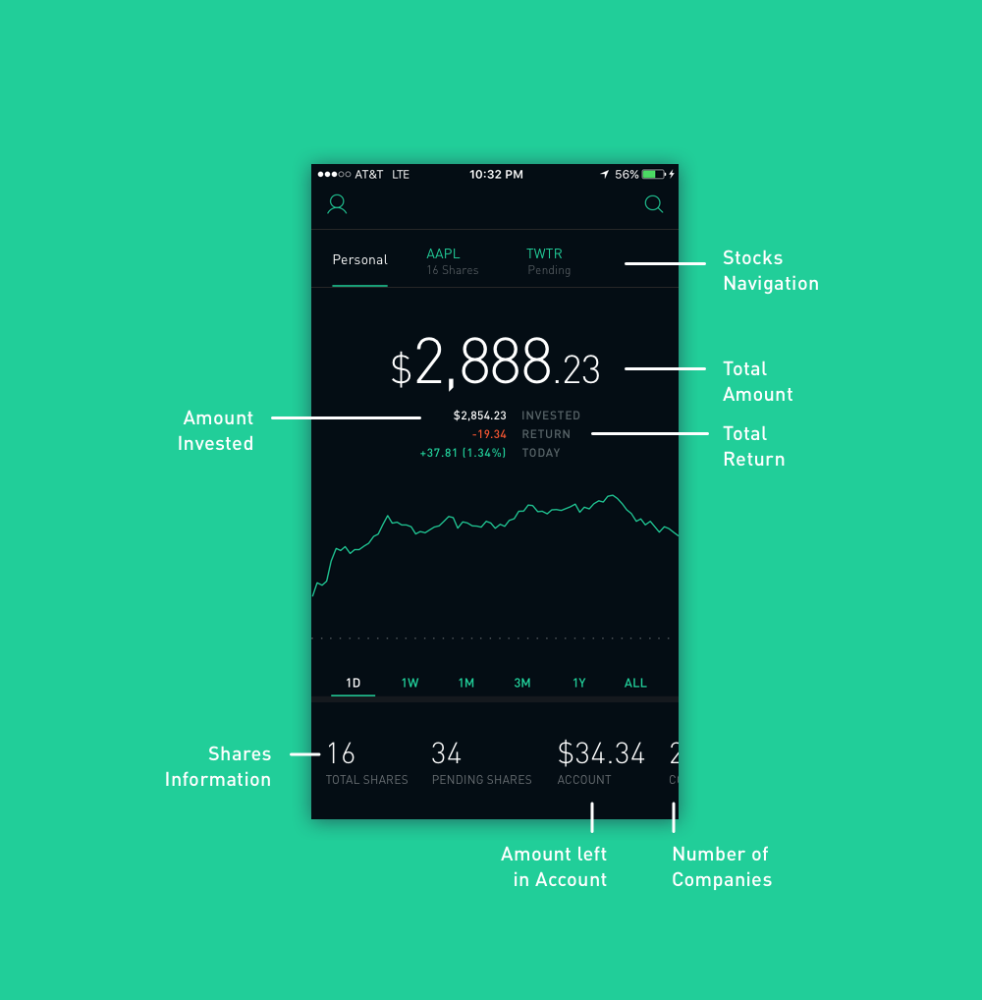
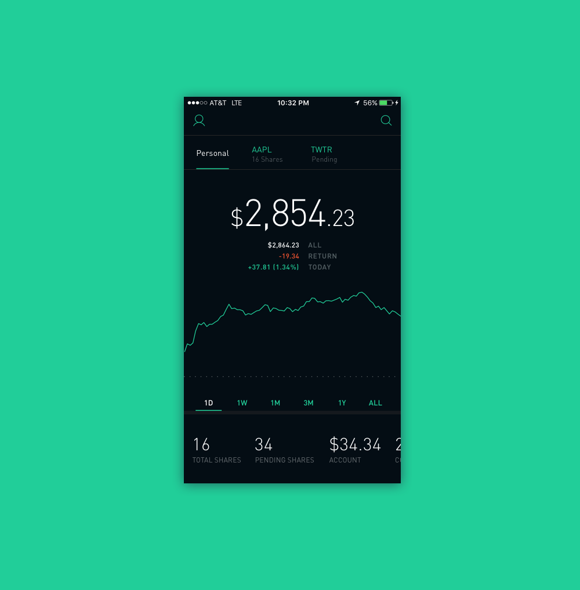

The current design below is already really well done. However, I wanted to focus on providing more relevant information within the main landing screen. Users new to stock trading are often times cautious about stocks, specifcally their current profit or loss. Furthermore, the main screen doesn't provide the user with information regarding which stocks they've invested. There's been a time when I didn't even realize I bought shares of a specific stock. So, I wanted to address two issues without changing the familiar design.
Current Robinhood Landing Screen
New Robinhood Landing Screen w/ annotations
I added a stocks navigation at the top to provide easy access for the user to see which stocks they've invested in and to quickly flip through how their stocks are doing. Then I provided additional information: amount invested and overall cash return on invested stock. Lastly, I added more information below pertaining to the quantity of the shares and which shares still are processing. Since, Robinhood doesn't invest the shares instantly, indicating the process will allow users to know when their money is invested and elevate the worries of a new User.
New Robinhood Landing Screen without annotations